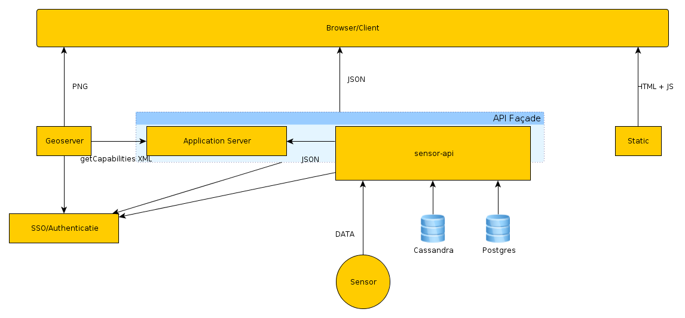

An Ubuntu 12.04 LTS server for the various test sites has been set up at s-ddsc-ws-d1.external-nens.local on a virtual machine in Nelen & Schuurmans’ Amsterdam data center. (See nens-internal-only server overview page.)
Three sites are hosted there at the moment:
The Ubuntu server also has a PostgreSQL/PostGIS database locally. Later on, this has to be moved to a separate machine.
The current structure is as follows:
PostgreSQL is running on p-ddsc-db-d1.ddsc.local.
Using a Chef cookbook, four Cassandra servers have been set up, named p-ddsc-cass-d1.ddsc.local till p-ddsc-cass-d4.ddsc.local. They run Ubuntu 12.04 LTS.
For development and staging purposes, the following RabbitMQ server is used: p-flod-rmq-d1.external-nens.local. You can see the connection data (except the password) in the API site’s staging settings.
A dedicated RabbitMQ production server is on p-ddsc-rmq-d1.ddsc.local.
The DDSC webclient is at http://ddsc.github.com/webclient .
The communication of the webclient and the server follow this diagram:
